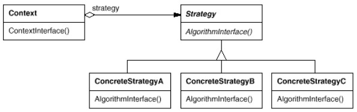

But : Définir une famille d'algorithmes, encapsuler chacun d'entre eux et les rendre interchangeables par le biais d'une interface.
Exemple
// 1 - interface de l'algo
interface Strategy {
void solve();
}
// 2 - implémentations de l'algo
class Solution1 implements Strategy {
void solve(){ ... }
}
class Solution2 implements Strategy {
void solve(){ ... }
}
// 3 - Client
public class Client {
public static void main( String[] args ) {
Strategy[] strategies = {new Solution1(), new Solution2()};
for (Strategy strategy : strategies) {
strategy.solve();
}
}
}
(voir le code dans StrategyDemo.java).
Dans StrategyDemo1.java, le choix des stratégies implémentées est statique (connu à la compilation).
Dans StrategyDemo2.java, ce choix est dynamique.
Voir sur wikipedia un autre exemple illustrant la modification dynamique de la stratégie :
Car suvCar = new SUV(); // Constructor sets strategy "BrakeWithABS" suvCar.applyBrake(); // This will invoke class "BrakeWithABS" suvCar.setBrakeBehavior( new Brake() ); // set brake behavior dynamically suvCar.applyBrake(); // This will invoke class "Brake"(copie locale dans CarExample.java)
Structure
Le diagramme classique (gof) : Context sert d'intermédiaire entre le code client et les statégies. Pas toujours utile, transmet les requêtes des clients à la stratégie utilisée.
Le code client choisit la stratégie à utiliser et la transmet au contexte.
Exercice : Utilisation de Strategy pour calculer pi, qui permet d'illustrer l'utilisation de
Context.
Remarques
-
La présence de l'interface
Strategyest cruciale, car c'est grace à elle qu'on peut changer de stratégie. - Les implémentations peuvent changer, être remplacées sans avoir à toucher aux clients.
- Pattern entraînant la création de classes (attention à une prolifération excessive).
- Le code client doit choisir la stratégie à utiliser, il doit donc être au courant des stratégies possibles.
-
Les échanges d'information entre le contexte et les stratégies sont importants.
Parfois les infos nécessaires aux stratégies sont passées en paramètre (mais risque de passer de l'info inutile, car les stratégies n'ont pas forcément toutes les mêmes besoins).
Ou le contexte peut passer une référence à lui-même à la stratégie, qui prendra l'info dont elle a besoin. -
Il n'y a aucun lien direct entre les clients des algos et leurs implémentations.

-
Similarité avec Template Method car permet aussi de choisr l'algo utilisé.
Template Method utilise l'héritage pour faire varier des partie de l'algo ;
Strategy utilise la composition pour faire varier l'algo entier. - "Strategy permet de changer les tripes d'un objet alors que Decorator permet d'en changer la peau".
-
Noter la similarité avec Command : les deux patterns définissent une interface avec une méthode.
Strategy a pour but de faire la même chose de manières différentes.
Command a pour but de faire différentes choses.